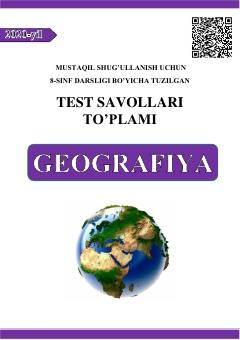

8O8-sinf O'zbekiston iqtisodiy va ijtimoiy geografiyasi bo'yicha mavzulashgan testlar to'plami.
Ushbu qo'llanma 8-sinf o'quvchilari uchun O'zbekistonning iqtisodiy va ijtimoiy geografiyasi fani bo'yicha tuzilgan mavzulashgan test savollarini o'z ichiga oladi. Material mustaqil shug'ullanish hamda bilimni sinovdan o'tkazish uchun mo'ljallangan bo'lib, o'quvchilarning geografik tushunchalar va hududiy tuzilish bo'yicha bilimlarini mustahkamlaydi.